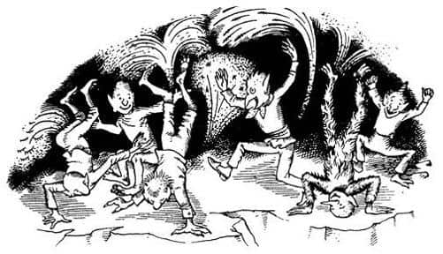
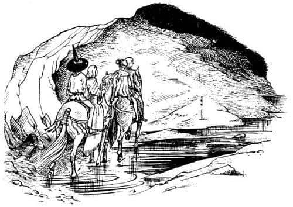

Dünyanın Dibi
“Benim adım Golg” dedi cüce. “Siz saygın beylere bildiğim her şeyi anlatacağım. Bir saat kadar önce, uzun yıllardır her gün yaptığımız gibi hepimiz sessiz ve üzgün, işimizi – onun işini demeliyim – yapıyorduk. Sonra büyük bir şangırtı ve patlama duyuldu. Bunu duyar duymaz herkes kendi kendine, ‘Uzun süredir şarkı söyleyip dans etmedim ya da fişek atmadım; neden acaba?’ dedi. Sonra yine herkes kendi kendine, ‘Büyülenmiş olmalıyım,’ diye düşündü. Sonra herkes kendi kendine dedi ki, ‘Bu yükü neden taşıdığımı biliyorsam kahrolayım ve bir adım daha ileriye götürmeyeceğim, işte o kadar.’ Ardından tüm çuvalları, bohçaları, aletleri fırlattık. Sonra herkes şuradaki büyük kızıl parıltıyı gördü. Herkes kendi kendine, ‘Bu da ne?’ diye sordu. Ardından herkes kendi kendini cevapladı ve, ‘Bir çatlak ya da yarık açıldı ve o çatlak sayesinde, bin fersah altımızdaki gerçek derin ülkeden tatlı ve sıcak bir parıltı geliyor’ dedi.”
“Aman Tanrım” diye bağırdı Eustace, “daha aşağıda başka ülkeler de mi var?”
“Ah, evet efendim” dedi Golg. “Harika yerler; biz oralara Kaynar Ülke diyoruz. Şu anda bulunduğumuz yer, yani Cadı’nın ülkesi, bizim Sığlık Ülkeler dediğimiz yerlerdir. Yüzeye bizi huzursuz edecek kadar yakın. Of! Dışarıda, yeryüzünde yaşasan daha iyi. Görüyorsunuz ki bizler, Cadı’nın buraya çalıştırmak için getirdiği Kaynar Ülkeli zavallı cüceleriz. Ancak o şangırtıyı duyana ve büyü bozulana kadar bunu unutmuştuk. Kim olduğumuzu ve nereden geldiğimizi bilmiyorduk. Onun bize söylediklerinden başka hiçbir şey düşünemiyor ya da yapamıyorduk. Bunca yıldır aklımıza soktuğu şeyler hep kasvetli ve hüzünlü şeylerdi. Ben şaka yapmayı ya da dans etmeyi bile unutmuştum. Patlamanın olduğu, yarığın açıldığı ve denizin yükselmeye başladığı an her şeyi hatırladım. Kendi ülkemize, evimize dönmek için çatlaktan aşağıya inmek üzere hepimiz yollara düştük. Bakın! Havai fişekler atıp sevinçten amuda kalkıyorlar. Onlara katılmama izin verirseniz size minnettar kalırım.”
“Bence bu harika” dedi Jill. “Cadı’nın kafasını kestiğimize, hem kendimizi hem de cüceleri kurtardığımıza çok sevindim. Artık eskisi gibi üzgün ve asık suratlı olmadıklarına çok memnunum.”
“Bu çok iyi Pole” dedi Suratsız dikkatle. “O cüceler, hiç de öyle kaçıyormuş gibi görünmüyordu. Bana sorarsanız, daha çok askeri birlikler gibiydiler. Yüzüme bakıp bana savaşa hazırlanmadığınızı söyleyebilir misiniz, Bay Golg?”
“Elbette savaşa hazırlanıyorduk” dedi Golg. “Cadı’nın öldüğünü bilmiyorduk. Kaleden bizi seyredeceğini düşündüğümüz için görünmeden kaçmaya çalışıyorduk. Sonra siz dördünüz kılıçlarınız ve atlarınızla geldiğinizde, Ekselanslarının Cadı’dan yana olmadığını bilmediğimiz için herkes kendi kendine, ‘İşte geliyorlar’ dedi. Bizler Kaynar Ülke’ye geri dönüş umudunu yitirmektense ölene kadar savaşmaya kararlıydık.”
“Yemin ederim bu dürüst bir cüce” dedi Prens. “Bırak onu, dostum Suratsız. Beni sorarsan, Golg, ben de sen ve arkadaşların gibi büyülenmiştim, kendime yeni geldim. Şimdi bir soru daha. Büyücünün yukarı dünyaya bir ordu çıkarmayı planladığı yeni kazı bölgelerine giden yolu biliyor musun?”
“Ay-ay-ay!” diye tiz bir çığlık attı Golg. “Evet, o korkunç yolu biliyorum. Nerede başladığını size göstereceğim. Yalnız Ekselansları, sakın sizinle gelmemi istemeyin. Ölürüm daha iyi.”
“Neden?” diye sordu Eustace endişeyle. “O kadar korkunç olan ne?”
“Üste, dışarıya çok yakın” dedi Golg. “Bu Cadı’nın bize yaptığı en büyük kötülüktü. Açığa, dünyanın dışına çıkarılacaktık. Orada tavan olmadığını söylüyorlar; sadece gökyüzü denilen korkunç büyük bir boşluk varmış. Kazılar o kadar ilerlemişti ki, birkaç kazma vuruşundan sonra dışarıya açılacaktır. Yakınına gitmeye cesaret edemem.”
“Hurraa!” diye bağırdı Eustace ve Jill, “Yukarısı kötü değildir. Biz severiz orayı. Orada yaşıyoruz.”
“Siz yukarı dünyalıların orada yaşadığını biliyorum” dedi Golg. “Ama bunu aşağıya giden yolu bulamadığınız için yaptığınızı sanıyordum. Orayı gerçekten seviyor olamazsınız. Dünyanın üstünde sinekler gibi yürümek ha!”
“Hadi yolu göster bize” dedi Suratsız.
“Çok yaşa” diye bağırdı Prens. Tüm grup yola çıktı. Prens atına bindi, Suratsız, Jill’in arkasına oturdu ve Golg önlerine düştü. Giderken Cadı’nın öldüğünü ve yukarı dünyalıların tehlikeli olmadığını bağırıp durdu. Onu duyanlar da diğerlerine haber verdi. Birkaç dakika içinde tüm yeraltı bağırışlar ve hurralarla çınlıyordu; yüzlerce, binlerce cüce hoplayarak, taklalar atarak, amuda kalkarak, birdirbir oynayarak ve kocaman havai fişekler fırlatarak Kömürkarası ile Kartanesi’nin yanına geldi. Prens büyüleniş ve kurtuluş hikâyesini en az on kez anlatmak zorunda kaldı.

Böylece çatlağın kenarına vardılar. Yaklaşık üç yüz elli metre uzunluğunda ve yetmiş metre genişliğindeydi. Atlarından inip kenara geldiler ve aşağıya baktılar. Şimdiye kadar duydukları hiçbir kokuya benzemeyen bir kokuyla karışık bir sıcaklık çarptı yüzlerine. Ağır, keskin ve heyecan verici bir kokuydu ve insanı hapşırtıyordu. Çatlağın derinlikleri öyle parlaktı ki gözlerini kamaştırdı, bir şey göremediler. Gözleri alıştığında, ateşten bir nehri ve o nehrin kıyılarında – nehirle kıyaslandıklarında sönük kalmalarına rağmen – dayanılamaz sıcaklık ve parlaklıktaki tarlaları ve bahçeleri seçebildiler. Maviler, kırmızılar, yeşiller ve beyazlar birbirine karışmıştı. Koskocaman, pasparlak bir vitrayın içinden öğle güneşinin süzüldüğünü düşünün; işte öyle bir manzaraydı gördükleri. O kızgın ateşin ışığında kara sinekler gibi görünen yüzlerce Toprak İnsan çatlağın engebeli kenarlarından aşağıya iniyordu.
“Saygın Beyler” dedi Golg (gözleri öylesine kamaşmıştı ki, bakmak için döndüklerinde birkaç dakika karanlıktan başka bir şey göremediler). “Saygın Beyler, neden aşağıya Kaynar Ülke’ye gelmiyorsunuz? Orada, o yukarıdaki soğuk, korumasız, çıplak ülkede olduğunuzdan çok daha mutlu olursunuz. En azından kısa bir ziyaret için gelin.”
Jill, diğerlerinin bu fikre sıcak bakmayacağından emindi. Dehşetle Prens’in şöyle dediğini duydu:
“Dostum Golg, gerçekten gönlüm seninle aşağı inmekten yana. Çünkü bu harika bir macera; daha önce hiçbir ölümlü Kaynar Ülke’ye gitmemiştir bence, bir daha böyle bir fırsat bulamayabiliriz. Yıllar sonra, bir zamanlar dünyanın en derin çukurunu inceleme gücüne sahip olduğumu, ancak yapmadığımı hatırlamaya nasıl dayanırım bilmiyorum. İnsanlar orada yaşayabilir mi? Siz ateş nehrinde yüzmüyorsunuz, değil mi?”
“Ah hayır, Ekselansları. Biz yüzmeyiz. Sadece semenderler ateşte yaşarlar.”
“Semender nasıl bir hayvan?” diye sordu Prens.
“Anlatması zor Ekselansları” dedi Golg. “Çünkü bakılmayacak kadar beyazlar. Genellikle küçük ejderhalara benzerler. Ateşin içinden bizimle konuşurlar. Dillerini harika bir biçimde kullanırlar. Etkili konuşurlar, hazırcevaptırlar.”
Jill, Eustace’e bir bakış attı. Yüzünün değişmiş olduğunu görünce içi sızladı. Uygulama Okulu’ndaki eski Scrubb’dan çok, bir prense benziyordu; daha önceki maceralarını ve Kral Caspian’la denize çıktığı günleri hatırlamıştı.
“Ekselansları” dedi. “Eski dostum Bastıbacak burada olsaydı, Kaynar Ülke’deki maceraları reddetmek şerefimizi lekeler, derdi.”
“Aşağıda” dedi Golg, “size gerçek altın, gerçek gümüş ve gerçek elmaslar gösterebilirim.”
“Of!” dedi Jill kabaca. “Sanki burada bile en derin maden ocaklarından daha derinde olduğumuzu bilmiyormuşuz gibi.”
“Evet” dedi Golg. “Siz yukarıda yaşayanların yerin kabuğunda küçük çizikler yaptığını ve bunlara maden ocağı dediğini duymuştum. Oralar ölü altın, ölü gümüş ve ölü değerli taşlar bulduğunuz yerler. Aşağıda, Kaynar Ülke’de canlıları var. Yemeniz için demet demet yakutlar toplar ve size birer bardak elmas suyu sıkabilirim. Kaynar Ülke’deki canlı hazinelerin tadına baktıktan sonra, sığ madenlerinizin soğuk ve cansız hazinelerine dokunmayı pek istemeyeceksiniz.”
“Babam Dünyanın Sonu’na gitmişti” dedi Rilian düşünceli bir şekilde. “Oğlu da dünyanın dibine giderse çok harika bir şey olur.”
“Ekselansları babasını hâlâ sağken görmek istiyorsa, ki sanırım bunu tercih eder” dedi Suratsız, “kazı bölgesine giden yola çıkmamızın zamanıdır.”
“Ayrıca kim ne derse desin ben bu delikten aşağıya inmem” diye ekledi Jill.
“Saygın insanlar gerçekten yukarı dünyaya gitmeye kararlıysa” dedi Golg, “yolun bir kısmı buradan aşağıda. Sel suları hâlâ yükseliyorsa—”
“Ah lütfen, lütfen!” diye yalvardı Jill.
“Korkarım öyle olması gerekecek” dedi Prens derin bir iç çekişle. “Ancak yüreğimin yarısını Kaynar Ülke’de bırakıyorum.”
“Lütfen!” diye yalvardı Jill.
“Yol nerede?” diye sordu Suratsız.
“Yol boyunca lambalar var” dedi Golg. “Ekselansları yolun başlangıcını çatlağın öte yanından görebilir.”
“Lambalar ne kadar daha yanacak?” diye sordu Suratsız.
O anda Kaynar Ülke’nin derinliklerinden, şöminede yakılan ateşin sesine benzeyen (sonradan bunun semenderin sesi olup olmadığını merak ettiler) ama tıslayan ve cızırdayan bir ses duyuldu.
“Çabuk! Çabuk! Çabuk! Kayalara, kayalara, kayalara” dedi ses. “Çatlak kapanacak. Kapanacak. Kapanacak. Çabuk! Çabuk!” Aynı anda sağır edici bir gürültüyle kayalar hareket etmeye başladı. Onlar bakarken çatlak daralıyordu. Geç kalmış cüceler her yönden çatlağa koşuyordu. Kayalardan aşağıya inmeyi beklemiyor, baş aşağı atlıyorlardı. Dipten güçlü ve sıcak bir hava akımı geliyordu, bazıları yapraklar gibi havada süzülüyordu. Süzülenler giderek çoğaldı; siyahlıkları ateş nehrini ve değerli taş bahçelerini örtüyordu. “Elveda saygıdeğer insanlar. Gidiyorum” diye bağırdı Golg ve atladı. Sadece birkaç cüce kalmıştı. Çatlak artık bir dereden daha geniş değildi. Sonra bir posta kutusunun mektup atılan deliği kadar daraldı. Artık çok parlak bir ip gibiydi. Sonra kayaların dudakları bin tane yük treninin, bin tane arabaya çarpışı gibi gürültüyle kapandı. O sıcak, delirtici koku kayboldu. Yolcular yeraltında yalnızlardı ve etraf artık çok daha karanlıktı. Sönük, donuk ve kasvetli lambalar yönlerini işaret ediyordu.
“Şimdi” dedi Suratsız, “bire on bahse girerim ki burada çok fazla kaldık ve şansımızı yitirdik, ama yine de denemeye değer. O lambalar beş dakika sonra sönerse şaşmam.”
Atlarını dörtnala koşturup, karanlık yolda şimşek hızıyla yol almaya başladılar. Yokuş aşağı inmeye başlamışlardı. Vadinin öbür yanında lambaların yükselerek göz alabildiğince uzandığını görmeseler, Golg’un onları yanlış yola gönderdiğini düşüneceklerdi. Lambaların ışığı vadinin dibinde akan suya yansıyordu.
“Acele edin” diye bağırdı Prens. Yokuştan aşağı dörtnala indiler. Beş dakika sonra vadinin dibi çok kötü olacaktı, çünkü sel suları bir değirmen kanalı gibi vadiye akmaktaydı, yüzmek gerekseydi eğer, atların pek şansı olmazdı. Su hâlâ otuz kırk santim derinliğindeydi ve kulakları sağır eden bir hışırtıyla akmasına rağmen öte yakaya sağ salim ulaştılar.
Önlerinde göz alabildiğince bir yokuş uzanıyordu; donuk lambalardan başka yol gösteren hiçbir şey yoktu. Yavaş, ama yorucu tırmanış başladı. Yeraltının tüm tepeleri artık ada olmuş, o adalarda sadece lambalar kalmıştı. Her geçen an uzaktaki bir ışık daha kayboluyordu. Çok geçmeden takip ettikleri yol hariç her yer tamamıyla karanlıkta kalacaktı; yolun geride bıraktıkları kısmında henüz lambalar sönmemişti.
Acele etmek için geçerli nedenleri vardı ama, atların dinlenmesi gerekiyordu. Bu şekilde daha fazla gidemezlerdi. Durdular, sudaki dalgacıkların sesini duyabiliyorlardı.

“Acaba, Zamanbaba artık sular altında kalmış mıdır?” dedi Jill. “Tüm o uyuyan garip hayvanlar?”
“O kadar yüksekte olduğumuzu sanmıyorum” dedi Eustace. “Güneşsiz Deniz’e ulaşmak için ne kadar aşağıya indiğimizi hatırlamıyor musun? Suların henüz Zamanbaba’nın mağarasına ulaştığını sanmıyorum.”
“Olabilir” dedi Suratsız. “Ben daha çok yoldaki lambalarla ilgileniyorum. Biraz zayıf görünüyorlar, değil mi?”
“Hep öyleydiler” dedi Jill.
“Ah” dedi Suratsız. “Artık daha yeşil görünüyorlar.”
“Söndüklerini söylemek istemiyorsun, değil mi?” diye bağırdı Eustace.
“Şey, nasıl çalışıyorlar bilemem, ama sonsuza kadar çalışmalarını bekleyemezsin, biliyorsun” diye cevapladı Suratsız. “Hevesin kırılmasın Scrubb. Gözüm aynı zamanda suyun üzerinde, artık eskisi gibi yükselmiyor.”
“Küçük bir teselli, dostum” dedi Prens. “Çıkış yolunu bulamazsak merhametinizi diliyorum. Kaynar Ülke’nin ağzında bizi geciktiren kibirim ve hayallerim yüzünden, suçlanması gereken benim. Haydi, gidelim.”
Sonraki bir saat boyunca Jill, Suratsız’ın lambalar konusunda bazen haklı olduğunu, bazen de sadece hayal gördüğünü düşündü. Bu arada arazi değişiyordu. Yeraltının tavanı öyle yakındaydı ki, o donuk ışıkta bile oldukça net görülebiliyordu. Büyük ve sağlam duvarların her iki yandan birbirlerine yaklaştığı seçilebiliyordu. Aslında yol onları dik bir tünele doğru götürüyordu. Kazıcıların son zamanlara kadar çalışmakta olduğunu gösteren kazmalar, kürekler, el arabaları ve benzer işaretler görmeye başladılar. Dışarıya çıkabileceklerini bilselerdi, bunların hepsi çok sevindirici olurdu. Gittikçe daralan ve geriye dönmenin zor olduğu bir deliğe girmek hiç de hoş değildi.
Sonunda tavan öyle alçalmıştı ki, Suratsız ve Prens başlarını çarptılar. Grup atlarından indi ve yürümeye başladı. Burada yol çok bozuktu, herkesin adım atarken dikkat etmesi gerekiyordu. Jill’in yoğunlaşan karanlığı fark etmesinin nedeni buydu. Artık karanlık sanki üstlerine çökmüştü. Diğerlerinin yüzleri yeşil ışıkta garip ve korkunç görünüyordu. Sonra Jill aniden (elinde değildi) bir çığlık koyuverdi. Tam önlerindeki lamba sönmüştü. Arkalarındakine de aynı şey oldu. Zifiri karanlıkta kalmışlardı.
“Cesaret dostlarım” dedi Prens Rilian. “Ölsek de kalsak da Aslan bizim önderimizdir.”
“Haklısınız efendim” dedi Suratsız. “Burada, aşağıda kapana kısılmamızın iyi bir yanı olduğunu aklınızdan çıkarmayın. Cenaze masrafından kurtuluruz.”
Jill çenesini tuttu. Diğer insanların ne kadar korktuğunuzu anlamalarını istemiyorsanız, susmak yapılacak en akıllıca şeydir; çünkü sesiniz sizi ele verir.
“Burada dikilmektense devam etsek daha iyi olur” dedi Eustace; Jill onun sesinin titrediğini duyunca, kendi sesine güvenmemekle ne kadar akıllılık ettiğini anladı. Suratsız ve Eustace önlerindeki bir şeylere çarpma korkusuyla ellerini uzatarak önden yürüdüler; Jill ve Prens atların dizginleri ellerinde, arkadan takip ettiler.
“Bana bak” dedi Eustace çok sonra, “benim gözlerim mi bozuluyor, yoksa yukarıda bir ışık mı var?”
Kimse cevaplayamadan Suratsız bağırdı: “Durun. Çıkmazın sonuna geldim. Bu kaya değil toprak. Ne diyordun Scrubb?”
“Aslan adına!” dedi Prens, “Eustace haklı. Orada bir tür—”
“Ama günışığı değil” dedi Jill. “Sadece soğuk, mavi bir ışık.”
“Hiç yoktan iyidir” dedi Eustace. “Yetişebilir miyiz?”
“Tam tepemizde değil” dedi Suratsız. “Yukarıda, çarptığım duvarda. Pole, omuzlarıma çıkıp oraya ulaşmayı denemek ister misin?”